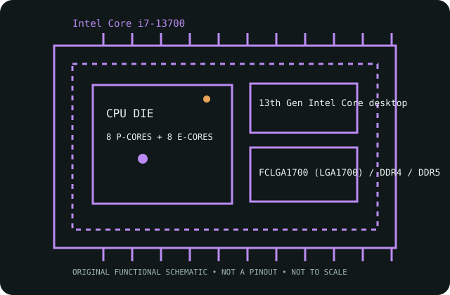

[ INTEL DESKTOP GENERATIONS // IDENTIFIED CPU ]
Intel Core i7-13700
13th Gen Intel Core desktop (Raptor Lake-S), Q1 2023. 16 cores / 24 threads (8 P-cores + 8 E-cores); P-core base 2.10 GHz / E-core base 1.50 GHz; max turbo 5.20 GHz (P-core max 5.10 GHz, E-core max 4.10 GHz); 30 MB Intel Smart Cache; 65 W Processor Base Power; 219 W Maximum Turbo Power; FCLGA1700 (LGA1700).

MODEL IDENTIFICATION: Intel Core i7-13700; Intel ARK product SKU 230490. Match the full model suffix and board CPU-support list before purchase or installation.
Recorded specifications
| Exact model / Intel ARK SKU | Intel Core i7-13700 / 230490 |
|---|---|
| Generation / launch | 13th Gen Intel Core desktop (Raptor Lake-S), Q1 2023 |
| Core / thread configuration | 8 Performance-cores and 8 Efficient-cores; 24 threads |
| Frequency | P-core base 2.10 GHz / E-core base 1.50 GHz; max turbo 5.20 GHz (P-core max 5.10 GHz, E-core max 4.10 GHz) |
| Cache | 30 MB Intel Smart Cache |
| TDP / power limits | 65 W Processor Base Power; 219 W Maximum Turbo Power |
| Package / socket | FCLGA1700 (LGA1700) |
| Memory support | Dual-channel; DDR5-5600 or DDR4-3200; up to 192 GB; 89.6 GB/s maximum bandwidth. Memory type depends on the motherboard. |
| CPU-direct PCIe | PCI Express 5.0 and 4.0; up to 20 CPU-direct lanes (up to x16+x4 or x8+x8+x4) |
| Integrated graphics | Intel UHD Graphics 770 integrated |
| Platform compatibility | Use an LGA1700 motherboard whose official CPU-support list includes the exact i7-13700. Many 600-series boards need an updated BIOS for 13th Gen; 700-series boards are also available. Check the board revision, BIOS, memory type and power/cooling policy before installation. |
Platform compatibility and service
- Use an LGA1700 motherboard whose official CPU-support list includes the exact i7-13700. Many 600-series boards need an updated BIOS for 13th Gen; 700-series boards are also available. Check the board revision, BIOS, memory type and power/cooling policy before installation.
- Check the motherboard revision, BIOS minimum, memory type, cooler mounting hardware and power-delivery/cooling capability; a matching socket by itself does not guarantee support.
- Intel UHD Graphics 770 integrated. For an F-series model, provide discrete graphics if display output is required.
- Archive the complete product marking, stepping, board revision, BIOS, memory population, cooling and test conditions; distinguish published limits from measurements.
Sources & further reading
- Intel ARK specifications — Intel Core i7-13700 (SKU 230490)Official Intel specification record for this exact processor model and product number.
- Intel Product Compare — Intel Core i7-13700 (SKU 230490)Official Intel comparison entry queried by the exact Intel ARK product ID.
Confirm final board compatibility against the motherboard maker's live CPU-support list and BIOS notes.